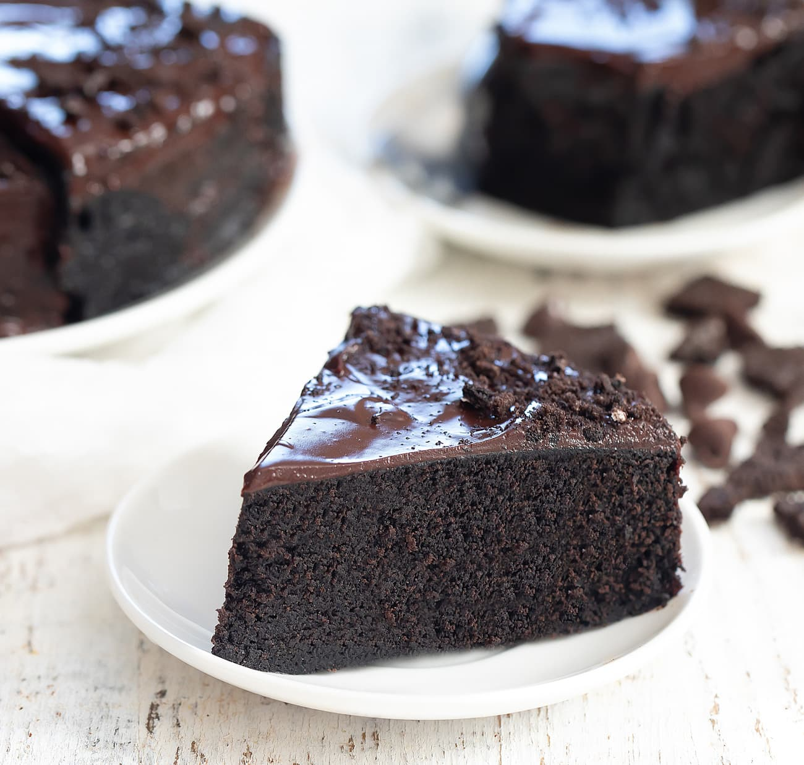

Oreo Cake
Description
Dive into the ultimate lazy dessert with this ridiculously easy Oreo cake! Made with just Oreos, milk, and a sprinkle of baking powder, this cake comes out super moist, chocolatey, and rich — literally tastes like a fudgy brownie but with zero effort. Perfect for when you’re craving something sweet but can’t deal with complicated recipes. Top it with crushed Oreos, a drizzle of chocolate syrup, or even a scoop of ice cream to level up the vibes. Ready in minutes, and guaranteed to make you the MVP of any hangout ✨🖤
Ingredients

- 20-25 Oreo biscuits
- 1 cup milk
- 1 tsp baking powder
- crushed Oreo(optional)
- chocolate syrup or nutella drizzle(optional)
Steps
- Crush the oreos
- Chuck all Oreos into a blender/mixer and grind them into a fine powder. Cream and all, don’t separate anything.
- Make the Batter
-
Dump the Oreo powder into a bowl, add baking powder if you have it, then pour in milk little by little. Mix until it’s a smooth, thick batter
- Prep the plan
- Grease a microwave/oven-safe bowl or small cake tin with oil or butter.
- Bake it
- Microwave method: Pop it in for 5-7 minutes on high power. Check with a toothpick — if it comes out clean, it’s done.
- Steaming method : Pour batter into a greased container, place it in a steamer or a big pan with water, cover with lid, and steam for 30-35 mins on medium flame.
- Oven method: Bake at 180°C (350°F) for 15-20 mins.
- Cool and Serve
Let it chill for 5-10 mins, flip it out, top with more crushed Oreos or drizzle chocolate syrup. Boom, done.
Home Page